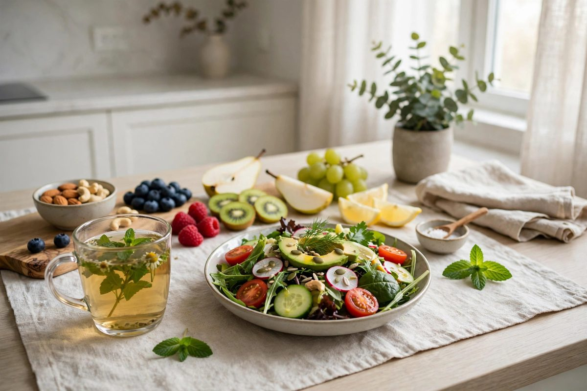

Emotional Eating — Breaking the Stress-Eating Cycle
Why we eat when we are not hungry, how to tell hunger from emotion, and practical strategies that work.
What emotional eating is
Emotional eating means eating in response to feelings, stress, boredom, tiredness, or habit, rather than physical hunger. It is extremely common: most people have eaten for comfort at some point. The food is usually high in sugar, salt, or fat, eaten quickly, and followed by guilt, which can trigger more eating. Emotional eating is not a lack of willpower. It is a learned coping habit, and like any habit, it can be changed, but not by willpower alone. Understanding the pattern is the first step to changing it.
Hunger versus emotion
Physical hunger builds gradually, can be satisfied by many foods, and stops when you are full. Emotional hunger comes on suddenly, craves a specific food, often something sweet or salty, and does not feel satisfied after eating. A useful test is the apple test: if an apple sounds appealing, you are probably physically hungry. If only chocolate or crisps appeal, it is probably emotional. Learning to pause and ask which kind of hunger you feel is a skill, and it improves with practice. You do not need to get it right every time; noticing the pattern is already progress.
Common triggers
The most common triggers are stress, tiredness, boredom, loneliness, and habit, such as eating while watching television. Stress raises cortisol, which increases appetite for high-calorie food. Tiredness has a similar effect, because short sleep raises hunger hormones. Boredom eating happens because food is the most available stimulation. Keeping a short note for a week, recording what you ate, when, and how you felt, usually reveals one or two clear patterns. Once you see the trigger, you can plan for it instead of being surprised by it.
Strategies that help
For stress, try a short walk, deep breathing, or a few minutes away from the situation before deciding to eat. For tiredness, a short rest or an earlier bedtime helps more than food. For boredom, keep your hands busy or choose an activity that engages you. For habit eating, change the routine: eat at the table instead of the sofa, or keep tempting food out of sight. A five-minute delay is a powerful tool: set a timer, drink a glass of water, and then decide. Often the urge passes. If you still want to eat, have a portioned snack and enjoy it without guilt.
Building other coping tools
Food works as a coping tool because it is fast, reliable, and always available. To reduce emotional eating, you need other tools that are also fast and reliable. Make a short list of five things that help you feel better: a walk, a phone call, music, a shower, or stepping outside. Keep the list where you can see it. When the urge to eat comes, try one item from the list first. It will not work every time, and that is fine. Each time it works, the new habit gets stronger, and the old one gets weaker.
When to seek help
If emotional eating feels out of control, if you eat large amounts quickly and feel unable to stop, or if it is affecting your health or mood, talk to your doctor or a therapist. Binge eating disorder is a real, treatable condition, not a personal failure, and professional help makes a large difference. There is no shame in asking for support. Even without a disorder, a dietitian or counsellor can help you build better coping strategies. Weight loss is harder when emotions drive eating, and addressing the emotions is part of the plan, not a distraction from it.
Frequently Asked Questions
How can I tell if I am really hungry?
Physical hunger builds gradually and can be satisfied by many foods, including an apple. Emotional hunger comes suddenly, craves one specific food, and does not feel satisfied after eating.
What should I do when I want to eat but I am not hungry?
Try a five-minute delay: drink water, take a short walk, or do something else first. If the urge passes, it was emotional. If you still want food, have a small portioned snack.
Is emotional eating a disorder?
Occasional emotional eating is normal. If you regularly eat large amounts quickly, feel out of control, or feel distressed about it, talk to your doctor — binge eating disorder is treatable.